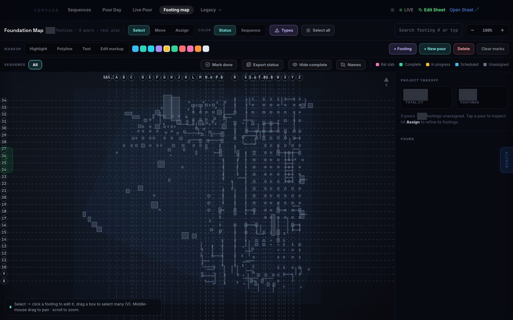
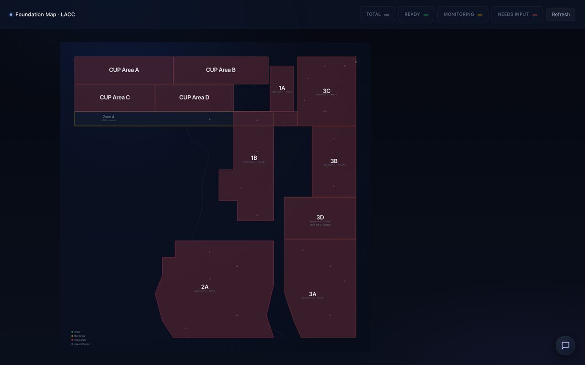
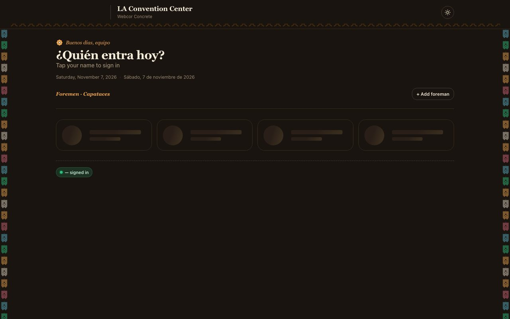
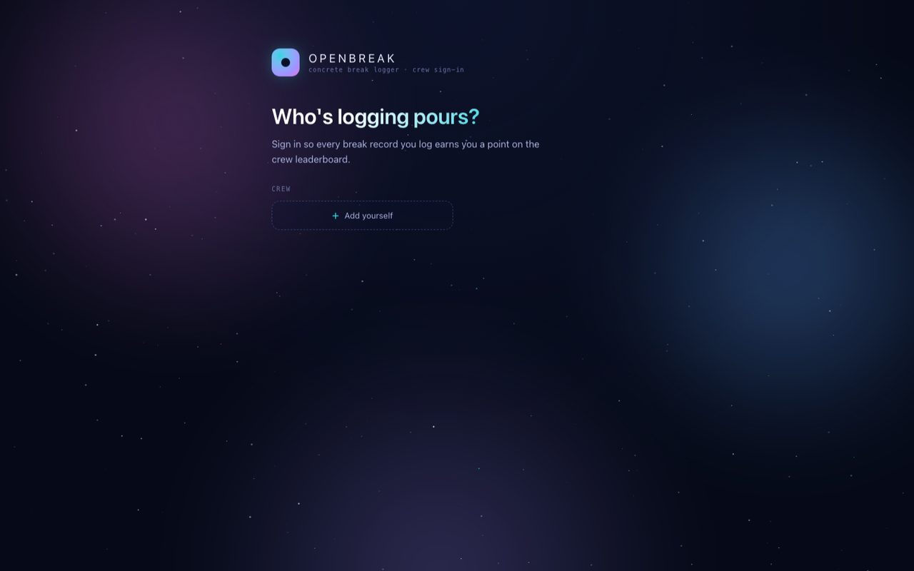
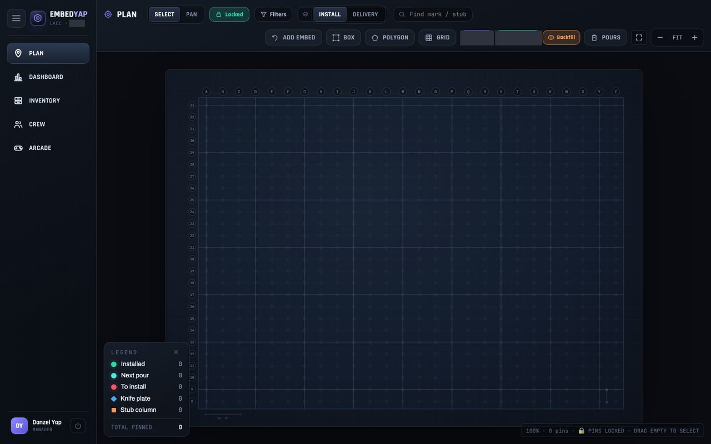
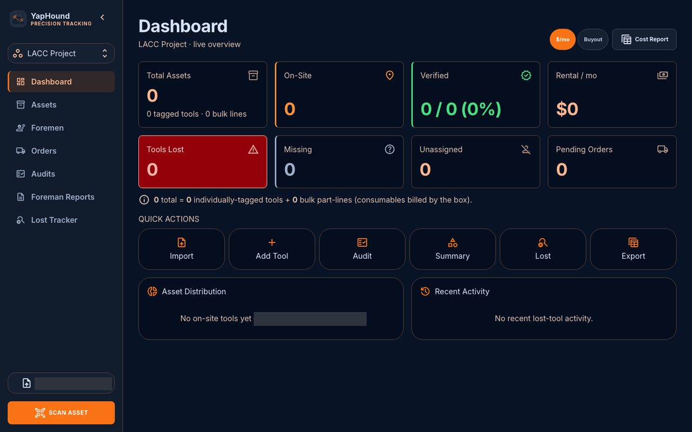
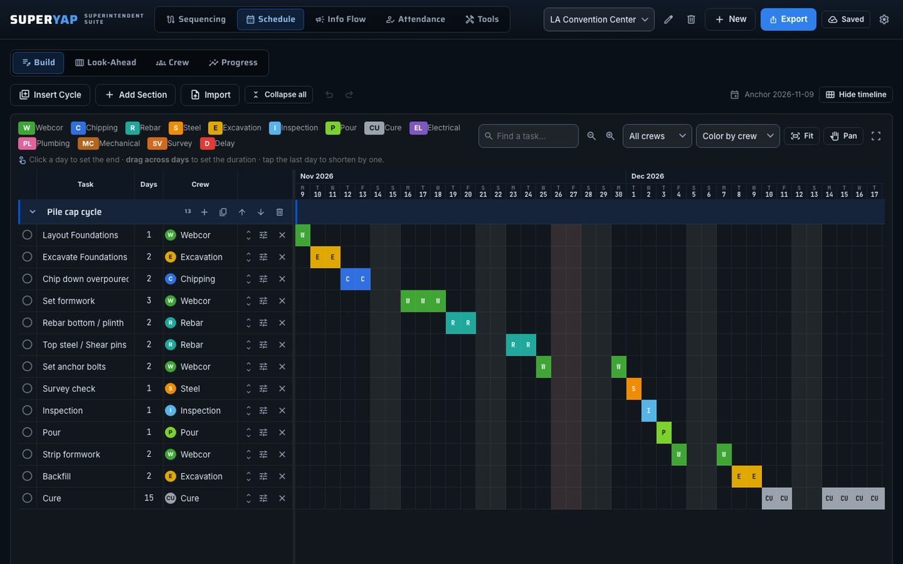
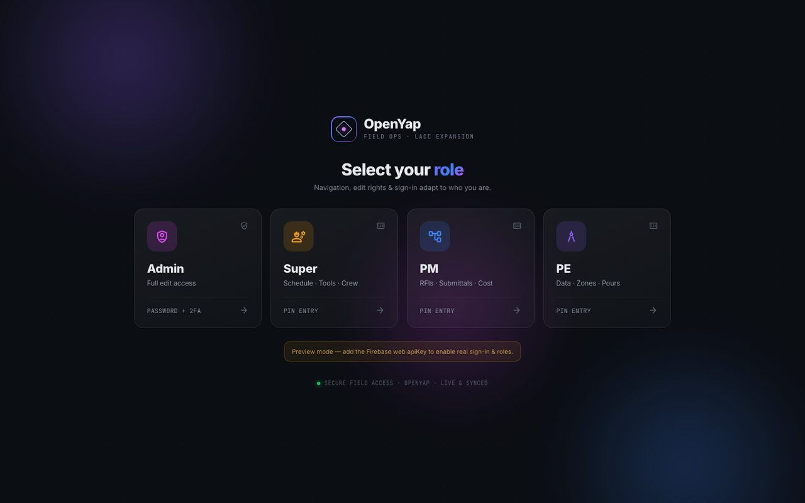
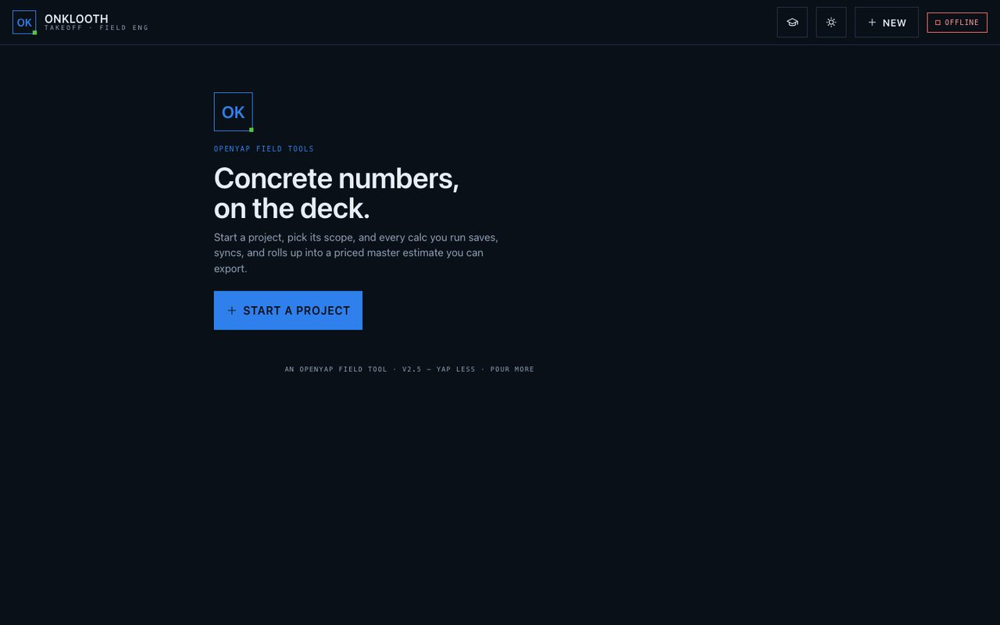

Legacy apps
Where OpenYap began
Before OpenYap Command Center, there were nine small apps. Each one started with a single problem on the Los Angeles Convention Center expansion: a pour, a sign-in sheet, a box of tools.
A tribute
How we got here
Most of these were built in a few days, opened by the team the next morning, and rebuilt after they told me what did not work. None of them was the final answer. Each one taught me something OpenYap needed to be.
They have all been retired into OpenYap Command Center. This page keeps them as they were, in the order they were built.
Timeline
CUP Pour Dashboard
The first app, and the largest: about 23,000 lines in a single page. It started as a view over the pour spreadsheet for the central utility plant and grew into pour-day tracking, a truck log, a live pour view for the team, a footing map, and embed checks.
It is where I learned that the people pouring concrete need the same picture as the people planning it.
What it becamePours and the foundation map in Command Center. Retired November 7, 2026.

Footing map, July 2026 version LACC Foundation
A one-day build. The foundation areas became a clickable map, and each area’s status was saved back to a spreadsheet the team already used.
What it becameIts area outlines became the sequence map inside the CUP dashboard.

Foundation area map Foreman Attendance
A bilingual daily sign-in that replaced the paper sheet. Foremen signed their crews in on a phone or tablet, signed with a finger, and exported the day to PDF.
What it becameAttendance in Command Center.

Bilingual sign-in screen Break Lab
A concrete cylinder break logger, also called OpenBreak, that replaced a 21-tab spreadsheet. Log a pour, enter each break, and see strength over time against the design strength. A small leaderboard kept the logging going.
What it becameAutomated break-report grading in OpenYap, which reads each report and sends a daily list of failed breaks.

Crew sign-in EmbedYap
An embed installation tracker on the foundation plan. Each embed was a pin: mark it installed, flag what belongs in the next pour, add notes, and follow deliveries.
What it becameEmbed tracking and quality control in Command Center.

Plan view, no project data loaded Tool Tracker
Tool inventory for the jobsite, later named YapHound: what is on site, what it costs each month, what has been audited, and what has gone missing. Foremen could count their own tools, in English or Spanish.
What it becameTools and foreman counts in Command Center.

Dashboard, no project data loaded SuperYap
A suite for superintendents. Build a look-ahead from repeatable work cycles, check crew loading and progress, and, from July 24, play the foundation pour sequence back over the plan.
What it becameThe schedule and look-ahead in Command Center.

Built-in pile cap cycle, generic trades Command Center, first version
The first attempt to bring the apps together: one map, views for superintendents, project managers, and engineers, and links out to the apps that did the detailed work.
What it becameOpenYap Command Center, rebuilt as one workspace with secure sign-in.

Role picker OnKlooth Takeoff
Field calculators for concrete: reshoring, formwork pressure, pumping, rebar laps, and crane outriggers. Each was checked against the spreadsheet it came from, and every run rolled up into a priced takeoff.
What it becameThe takeoff calculator in Command Center.

Start screen
Retired into OpenYap
One workspace now
The standalone apps were retired in the fall of 2026 and their work moved into OpenYap Command Center. The CUP dashboard, the first and the largest, was the last to go, on November 7, 2026.
Every feature in Command Center traces back to one of these. Thank you to everyone on the jobsite who used them, tested them, and told me plainly what to fix.
See OpenYap todaySnapshots captured November 7, 2026 from each app’s final archived version, run offline with no project data. Some labels and figures are covered. The SuperYap schedule shows the app’s built-in sample cycle with generic trade names. Dates and commit counts come from each app’s repository history. These apps are no longer in use.